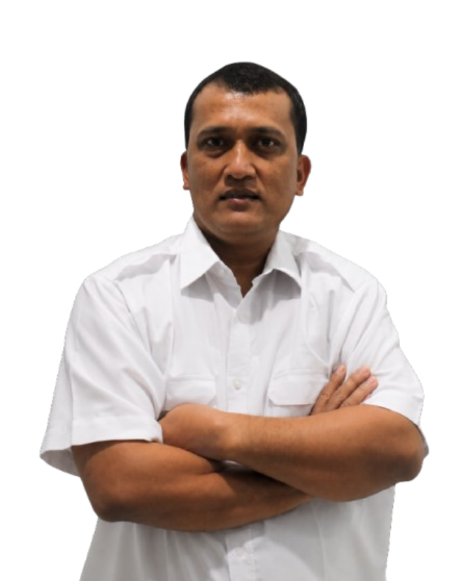
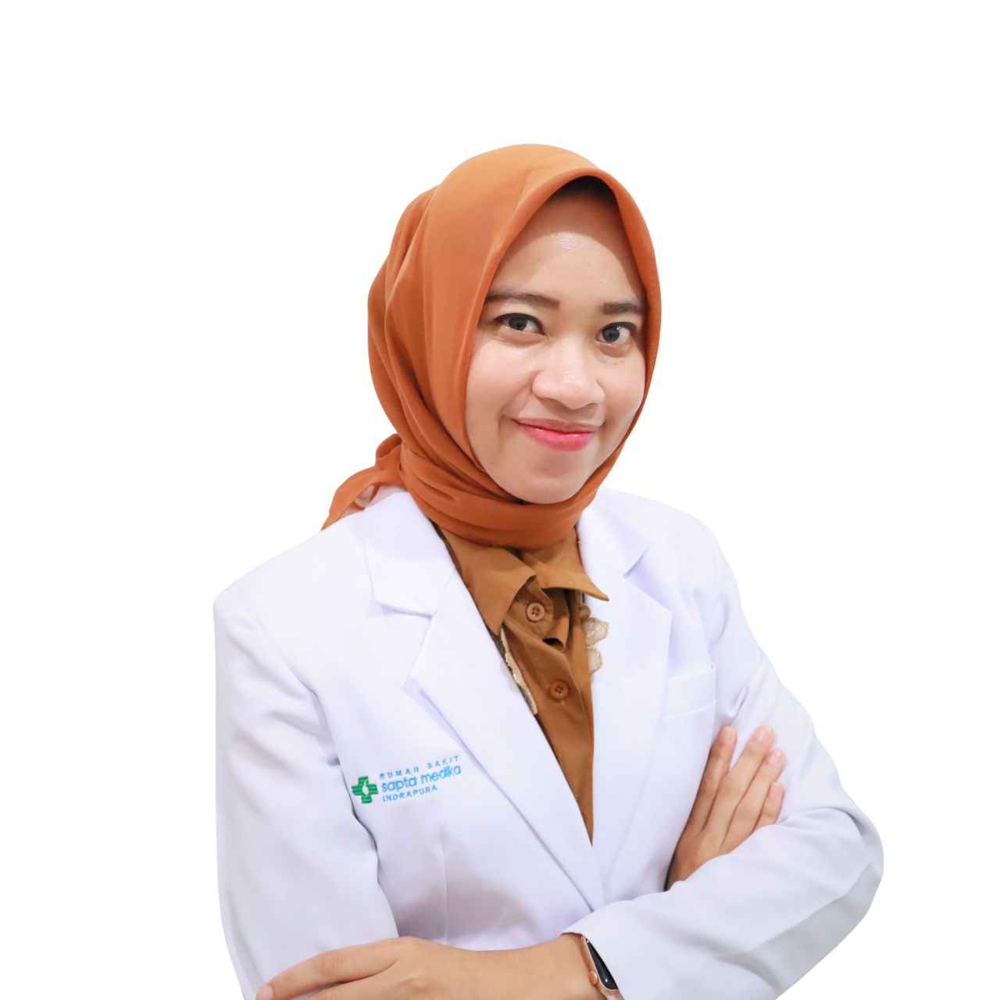
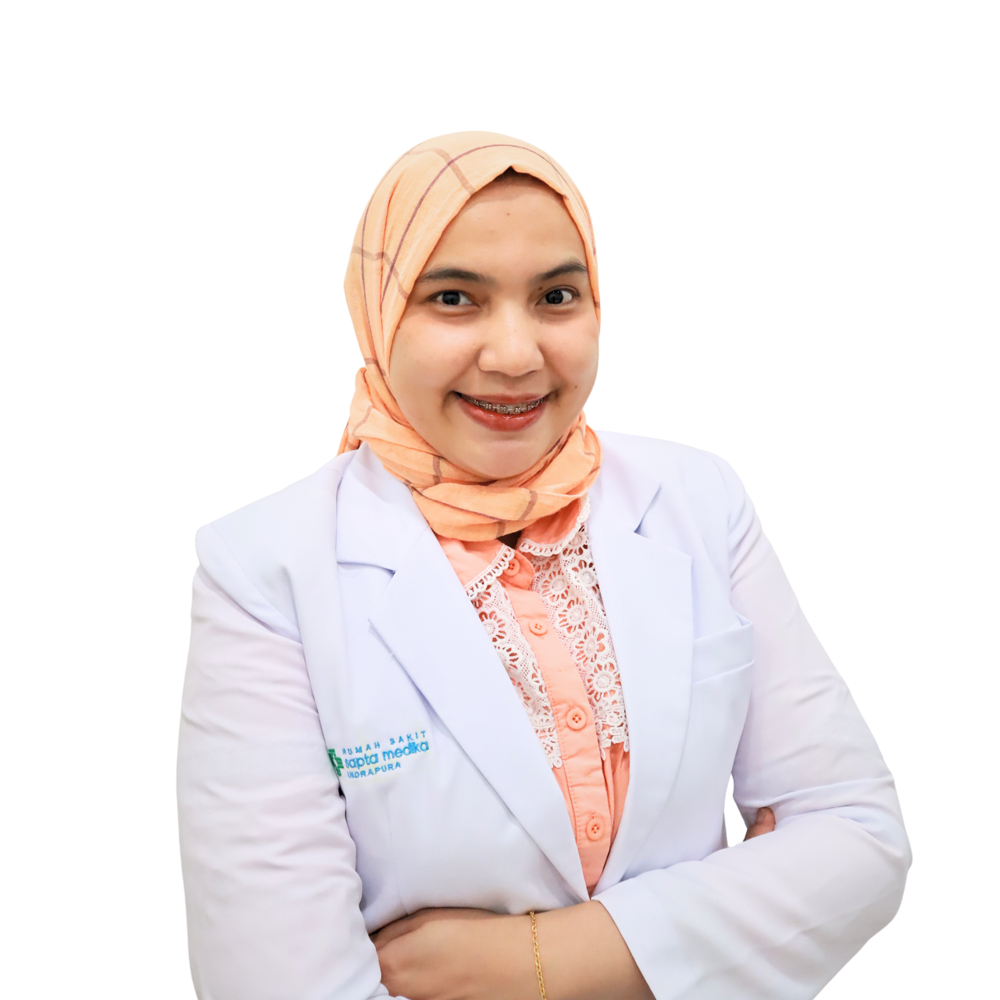

Instalasi Gawat Darurat
Pelayanan kegawatdaruratan 24 jam dengan tim medis yang siap memberikan respons cepat.
Selengkapnya →Pelayanan kesehatan yang profesional, humanis, dan terintegrasi untuk keluarga Indonesia. Kami hadir dengan teknologi modern dan tenaga kesehatan yang berdedikasi.
Kami mengembangkan layanan yang terintegrasi agar pasien mendapatkan pengalaman perawatan yang aman, cepat, dan nyaman.
Pelayanan kegawatdaruratan 24 jam dengan tim medis yang siap memberikan respons cepat.
Selengkapnya →Poliklinik dengan berbagai layanan spesialis dan jadwal dokter yang terintegrasi.
Selengkapnya →Ruang perawatan nyaman dengan pemantauan tenaga kesehatan secara berkelanjutan.
Selengkapnya →Pelayanan obat yang aman dan terintegrasi dengan proses pelayanan pasien.
Selengkapnya →Pemeriksaan penunjang untuk membantu dokter mendapatkan informasi klinis yang akurat.
Selengkapnya →Pemeriksaan pencitraan sebagai bagian dari dukungan diagnosis dan tindak lanjut pasien.
Selengkapnya →RSU Sapta Medika Indrapura berkomitmen menghadirkan pelayanan kesehatan yang mengutamakan keselamatan pasien, kualitas klinis, serta pengalaman pelayanan yang ramah dan profesional.
Temukan dokter dan spesialisasi yang sesuai dengan kebutuhan pelayanan kesehatan Anda.
Spesialis Penyakit Dalam

Spesialis Obstetri & Ginekologi
Spesialis Penyakit Dalam
Spesialis Bedah

Spesialis Penyakit Dalam
Spesialis Bedah

Spesialis Anak
Spesialis Paru
Spesialis Anak
Spesialis Radiologi
Isi formulir singkat di samping untuk simulasi konsep pendaftaran online pasien.
Artikel, pengumuman, edukasi kesehatan, dan informasi pelayanan rumah sakit.
Pemeriksaan kesehatan berkala membantu mendeteksi berbagai faktor risiko lebih dini.
Informasi jadwal praktik dokter dan layanan spesialis.
Panduan singkat untuk mempersiapkan kunjungan Anda.
Kenali kondisi yang membutuhkan penanganan kegawatdaruratan.